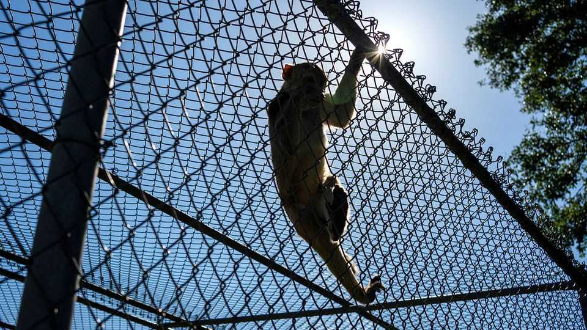

Republicans and Democrats uniting against animal testing are wrong
Experimenting on animals remains essential for human well-being

Aug 6th 2026
It should be a relief when America’s Democrats and Republicans find common ground. But one emerging area of bipartisanship is disturbing. Members of both parties increasingly oppose scientific research on animals. If they succeed in stopping it, they will prevent America from helping advance the welfare of the most valuable animal of all: humans.
Animal welfare may seem a cause for sandal-wearing lefties. But it has long had advocates on the right and far right. MAGA has embraced the crusade. Robert F. Kennedy junior, the health secretary, has vowed to end all animal experimentation, and under him the Centres for Disease Control and Prevention is closing its primate laboratory. The navy has banned funding for scientific research on cats and dogs.
The federal government is joined in the cause by plenty of Democrats—whose party otherwise sees itself as differing from Republicans by being committed to enlightened science. In Oregon Democratic politicians stand with Donald Trump’s appointees in trying to curtail research and shrink the monkey colony at America’s largest federally funded primate-research centre.
The surge in opposition to testing partly reflects queasiness about the ethics of experiments on animals (never mind their enormous contribution to human health). It also results from a growing belief in a new generation of technologies that is transforming biomedical science. So-called New Approach Methods (NAMs) include organs-on-a-chip, organoids and artificial-intelligence models. In some areas NAMs are indeed making drug discovery faster and cheaper without using any animals. Liver-chips, for example, can use human liver cells on miniature devices to help identify toxic medicines before they ever reach an animal study.
Yet it would be a mistake to think NAMs are anywhere close to rendering animal testing at scale unnecessary. Replicating small parts of human biology is not the same as reproducing all of it. Consider vaccines. They are among humanity’s greatest biomedical achievements, having saved an estimated 154m lives since 1974. Yet developing a vaccine entails finding and exploiting a complex biological pathway. Scientists have only just managed to mimic the first steps of this investigation on an organ-chip. Finding out the rest is still a process that depends on testing in both animal and human subjects. It is the same story with many other life-saving medicines.
There is also a practical reason to keep on testing. If America’s laboratories are shut down, leadership on biotechnology will pass to China. Its biotech industry is growing rapidly, and it has recruited leading American scientists who have faced funding cuts, regulatory barriers and political hostility at home.
China is also buying up research monkeys at a staggering rate, raising their price and squeezing American labs’ budgets. The ambition of China makes the campaign for animal rights self-defeating. If American labs stop testing, the work will only migrate to a country that has lower animal-welfare standards.
In future, NAMs may be able to displace more animal testing as technology advances. In the meantime animal welfare can be enhanced in labs. America’s decades-old primate centres should be modernised with bigger, more naturalistic enclosures for monkeys that allow in more daylight. Wearable monitoring technologies would reduce the need for handling, lowering the animals’ stress and improving the quality of the data they produce. This will cost money. All the more reason to keep funding animal research rather than cutting it off. ■